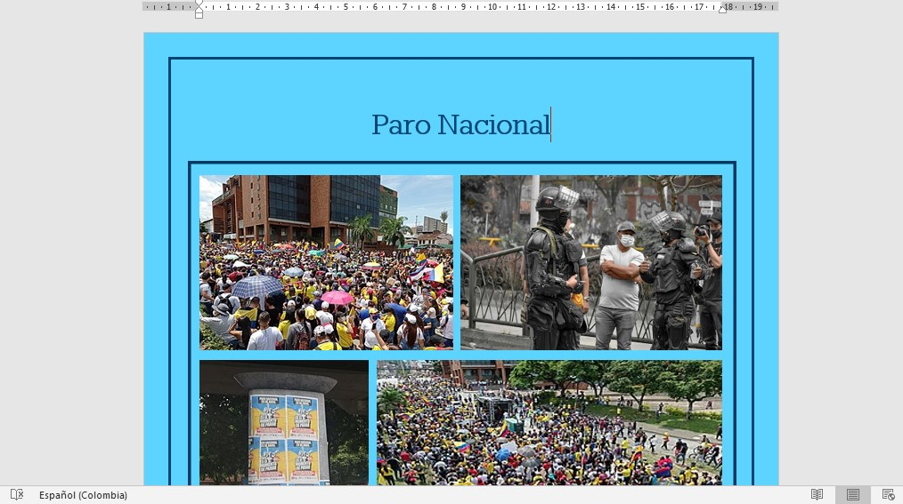
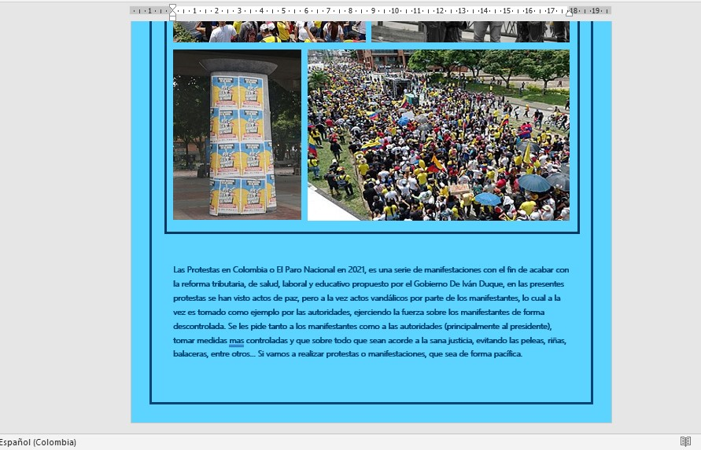
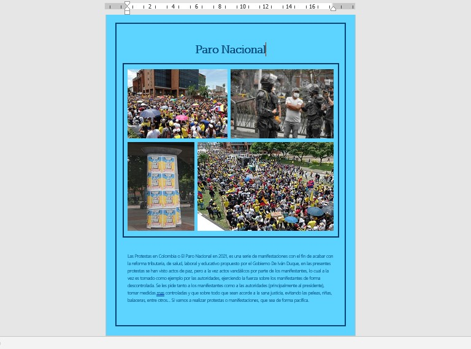

Tarea #4: Diseño de Páginas Word Tema Múltiple



A mi me perecio muy curiosa e interesante la actividad, ya que reforzé mis conocimientos acerca de Word y aprendí nuevas cosas, las cuales no las utilizaba. Tambié observé que word, a pesar de el uso que le damos hoy en dia, es una herramienta realmente poderosa con funciones y capacidades totalmente (y basicamente) infinitas.